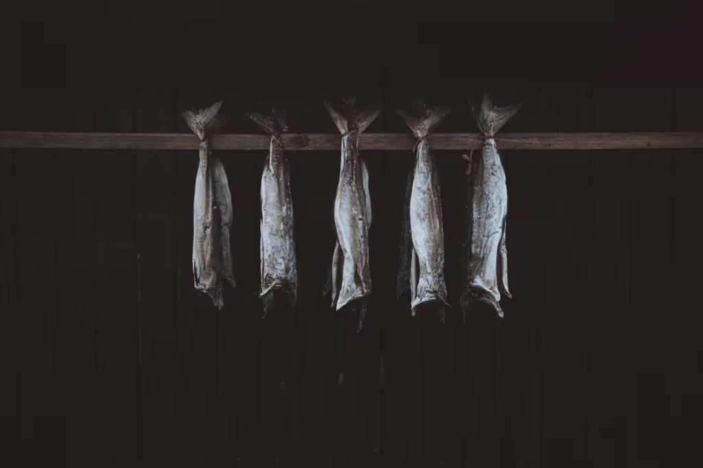
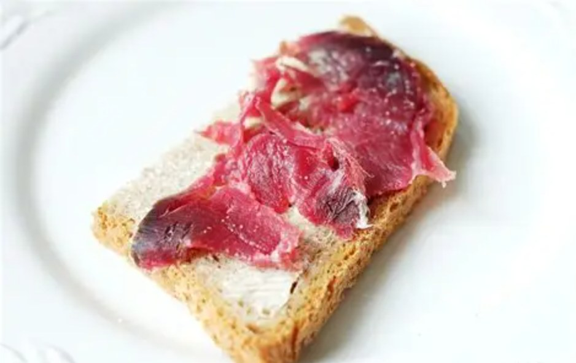
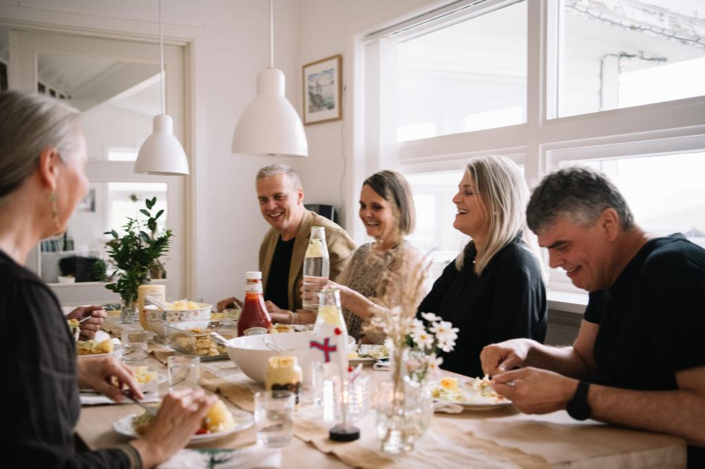

海洋的味道
新鲜海产与北大西洋的风味
渔业仍是法罗生活的根基。鳕鱼、鲑鱼与其他北大西洋海产出现在港口餐厅与家庭餐桌。托尔斯港是品尝当日渔获最方便的起点。
Food & Drink
海洋、牧场与岛屿生活，共同塑造了法罗独特的味觉。


海洋的味道
渔业仍是法罗生活的根基。鳕鱼、鲑鱼与其他北大西洋海产出现在港口餐厅与家庭餐桌。托尔斯港是品尝当日渔获最方便的起点。

来自牧场
羊几乎是法罗风景的一部分。传统风干羊肉 skerpikjøt 气味浓烈，是岛屿饮食记忆的核心之一。牧场、根茎蔬菜与简短的生长季，决定了法罗厨房的克制与鲜明。


Heimablídni
Heimablídni 是 Visit Faroe Islands 推广的当地体验：走进岛民家中，分享时令食材与生活故事。它不是观光化的农家宴，而是一次被邀请进入岛屿日常的机会。
了解更多 →